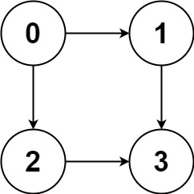
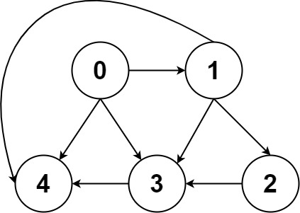

797. 所有可能的路径
DFS + 回溯：从 0 出发沿邻接表走，到 n−1 就把当前路径复制进答案，然后撤销最后一步换分支；DAG 保证无环不会绕圈。
思路
path记当前路径：进结点先add，出结点必remove（回溯）。- 走到终点
n-1时把path复制一份收进答案——不复制的话回溯会把它清空。 - 图是 DAG，无需 visited 数组；无后继又没到终点就自然返回。
图解
最优解
1import java.util.*;2 3class Solution {4 public List<List<Integer>> allPathsSourceTarget(int[][] graph) {5 List<List<Integer>> ans = new ArrayList<>();6 dfs(graph, 0, new ArrayList<>(), ans);7 return ans;8 }9 10 private void dfs(int[][] g, int u, List<Integer> path, List<List<Integer>> ans) {11 path.add(u);12 if (u == g.length - 1) {13 ans.add(new ArrayList<>(path)); // 到终点：把当前路径复制一份收进答案14 } else {15 for (int v : g[u]) dfs(g, v, path, ans); // DAG 无环：放心递归每个后继16 }17 path.remove(path.size() - 1); // 回溯：撤销本结点，让父层换下一个分支18 }19}题目
给你一个有 n 个节点的 有向无环图（DAG），请你找出从节点 0 到节点 n-1 的所有路径并输出（不要求按特定顺序）
graph[i] 是一个从节点 i 可以访问的所有节点的列表（即从节点 i 到节点 graph[i][j]存在一条有向边）。
示例 1：

输入：graph = [[1,2],[3],[3],[]] 输出：[[0,1,3],[0,2,3]] 解释：有两条路径 0 -> 1 -> 3 和 0 -> 2 -> 3
示例 2：

输入：graph = [[4,3,1],[3,2,4],[3],[4],[]] 输出：[[0,4],[0,3,4],[0,1,3,4],[0,1,2,3,4],[0,1,4]]
提示：
n == graph.length2 <= n <= 150 <= graph[i][j] < ngraph[i][j] != i（即不存在自环）graph[i]中的所有元素 互不相同- 保证输入为 有向无环图（DAG）
题面取自力扣当前版本。
数据快照 2026-11-04。题面版权归力扣所有，本站点仅供本人学习使用，请勿对外发布。